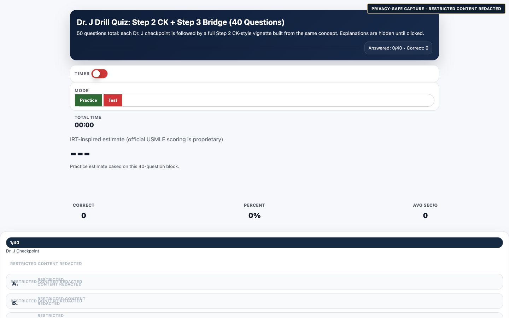

coreDr. J Immunology Quiz · Updated
Earliest recovered stacked Dr. J checkpoint and vignette quiz.
- Status
- historical precursor
- Authoring AI
- Unknown; ChatGPT-era download provenance
- Interaction
- Long stacked form with Practice/Test controls.
Strengths
- Direct recall plus vignette pairing
- Immediate explanations
Weaknesses
- Weak mobile layout
- No replay or timestamp anchors
Innovations
- Paired checkpoint and vignette
Full design record
Purpose: Earliest recovered stacked Dr. J checkpoint and vignette quiz.
Educational idea: Pair direct recall with clinical application.
Question flow: Dr. J checkpoint followed by board-style vignette.
Replay: No replay implementation evidenced.
Zoom Notes: No Zoom Notes behavior evidenced.
Explanation: Inline answer explanations.
Analytics: Results and topic summaries.
Animation: No material animation evidenced.
Visual language: Bright legacy quiz shell with stacked question cards.
CAM: CAM conformance not established.
Accessibility: Not independently certified; unknowns remain.
Responsive: Not independently certified; inspect representative captures.
Standalone: Standalone local HTML.
Daily Drills: No direct Daily Drills integration evidenced.
Dependencies: None evidenced; standalone local HTML.
Source: /Users/brianb/Downloads/immunology_quiz_full_updated.html
SHA-256: 63e82f117a50d0bb66d67af2cef31447f7e75c0020fb11123ddbf3a0f62846f1